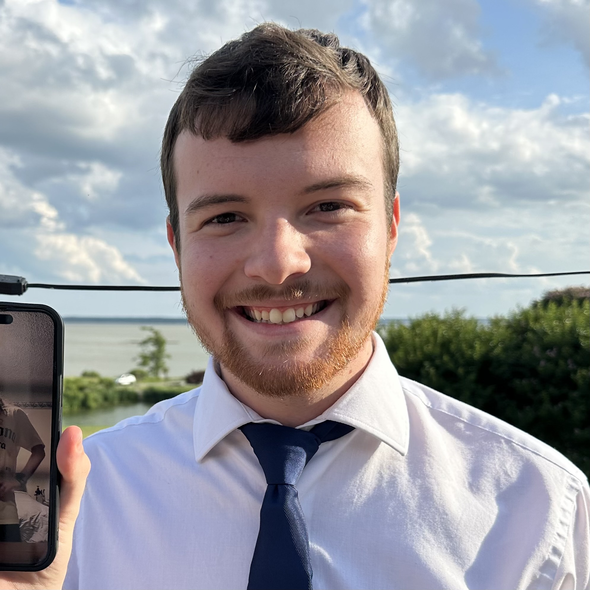

Helping people and small businesses stay connected and productive

Makan was founded on a simple idea: everyone deserves reliable, straightforward tech support from people they can trust. In today's connected world, technology problems shouldn't leave you feeling frustrated or alone.
We started as a local service for our neighbors, helping with everything from setting up new computers to fixing Wi-Fi issues. As word spread, we grew to serve more homes and small businesses throughout our community.
What sets us apart is our commitment to being your local tech lifeline. We're not a faceless call center or a giant corporation. We're your neighbors who understand your needs and provide solutions that actually work for you.
To provide approachable, reliable tech support that helps individuals and small businesses thrive in an increasingly digital world.
We show up when we say we will and do what we promise.
We explain things in plain English, not tech jargon.
We're invested in the success of our local community.
Join the many homes and businesses who trust us with their tech needs.
Get in Touch